Custom & non-standard series — every part is made to your print. Small batches are our normal work, from a single prototype to a short series.

Custom & non-standard series
Custom non-standard parts are our core capability. Seats, seat rings, balls, sealing rings and valve cores for high-pressure-drop and erosive service — complex geometries, special dimensions or specific operating conditions, we manufacture to your print. We use high-toughness grades that hold up to impact and erosion, which is where standard hard grades fail early.
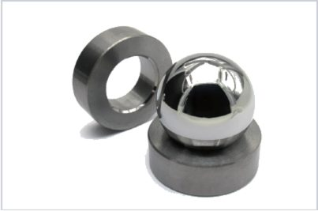
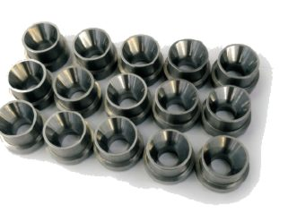
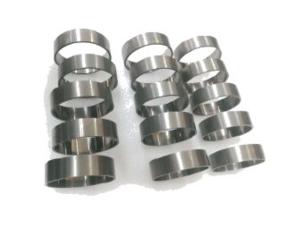
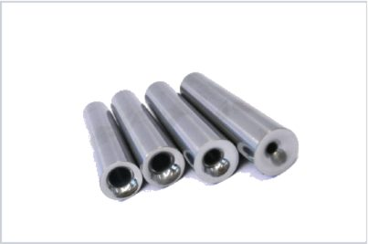

Custom & non-standard series
We supply cemented carbide die materials and custom die components — cold heading dies, stamping dies, drawing dies and extrusion dies. We recommend grades based on workpiece material, deformation ratio and operating conditions, to balance wear resistance, strength and impact toughness.
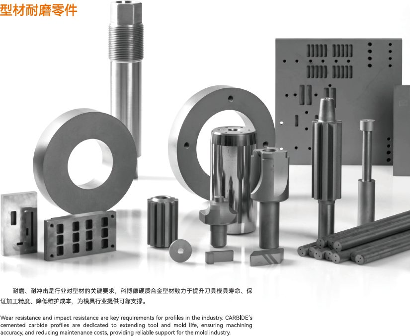

Custom & non-standard series
Non-magnetic cemented carbide materials are widely used where magnetic interference matters — near sensors, motors and magnetic measurement equipment. They feature high hardness, long service life, excellent wear resistance and strong corrosion resistance.
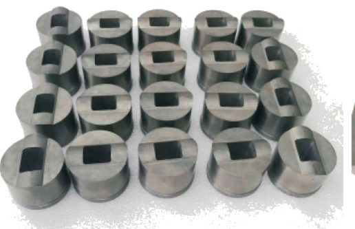
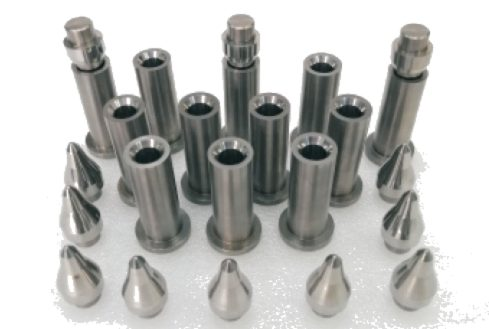
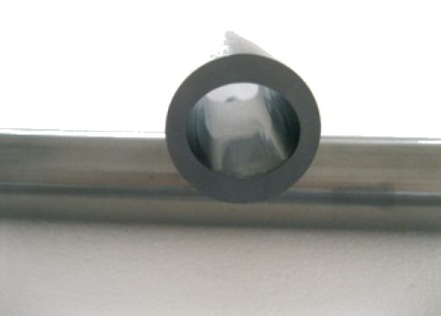

Custom & non-standard series
We supply blanks and semi-finished products: cemented carbide cutters, PCD tools and shock-resistant tool rods. Tool blanks for T-slot endmills are available to your print, with tight OD and bench tolerances.
| Blanks for T-slot Endmills | Range / Tolerance |
|---|---|
| OD diameter | Ø15.0 – Ø50.2 mm |
| Length | 100 – 300 mm |
| OD tolerance | +0.4 / 0 mm |
| Bench diameter | d ±0.3 mm |
| Bench length | C ±0.3 mm |
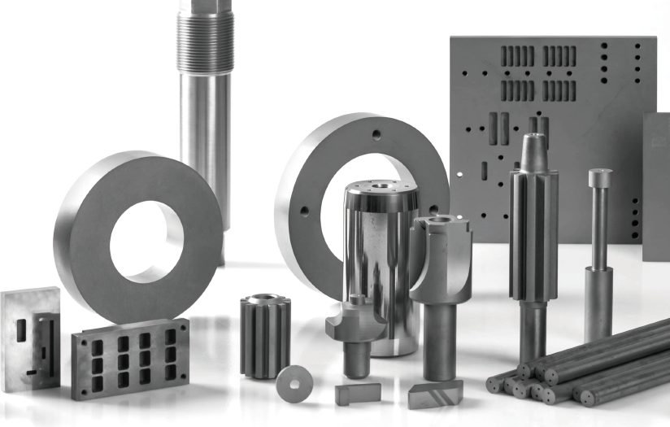
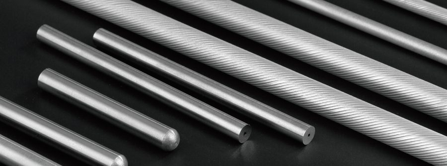
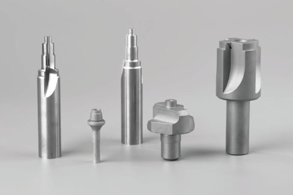
Send the drawing — if it can be made, we'll tell you how and quote it.